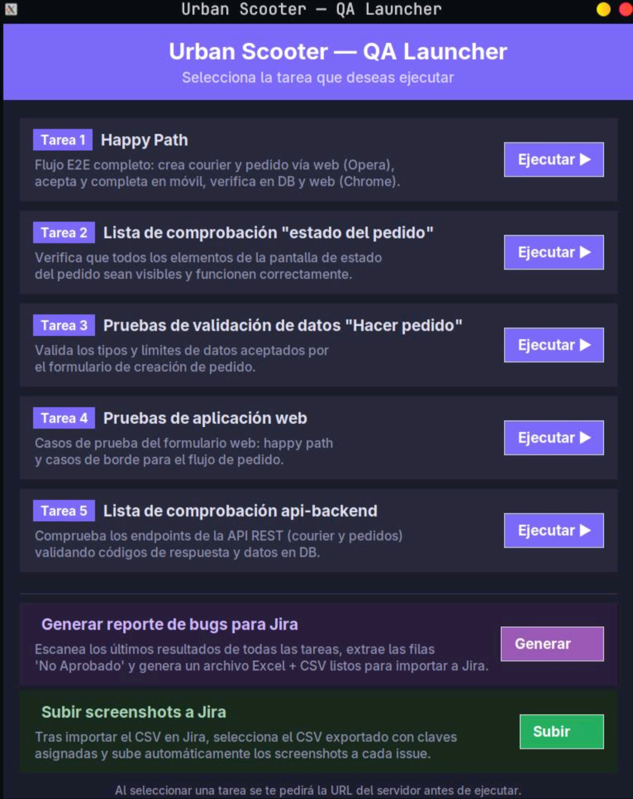
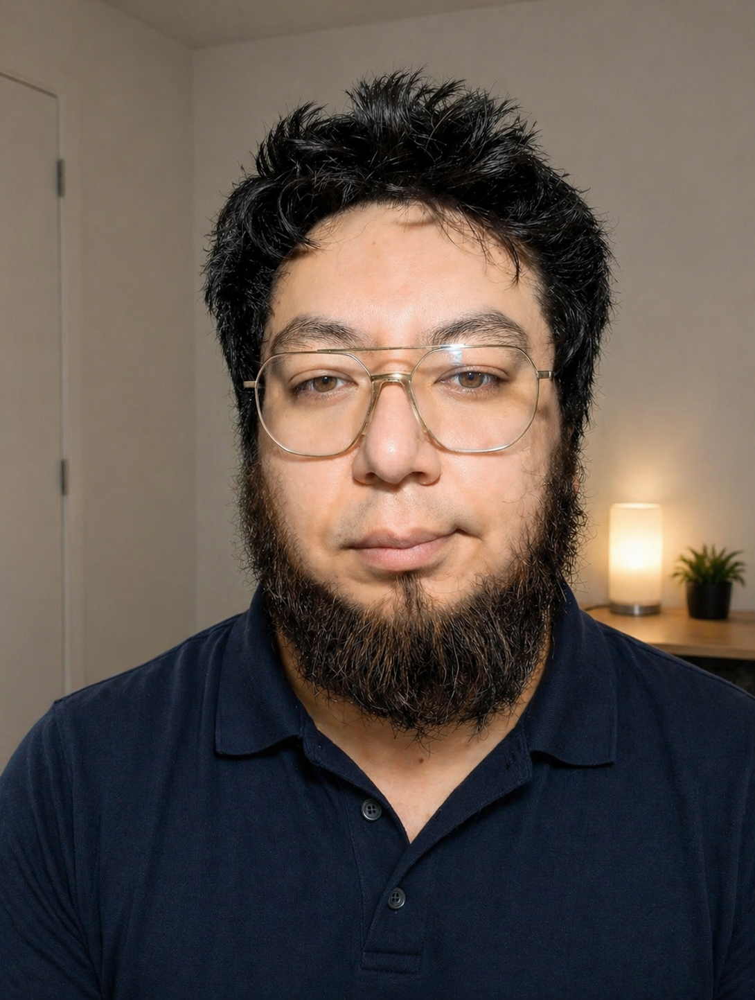

Mido si los agentes de IA realmente funcionan.
Evals, red-teaming y guardrails para sistemas con LLMs, con 7 años de calidad industrial detrás.
Medí un agente de ventas real en 1,103 conversaciones y después construí uno nuevo, con evals en el CI, red-teaming y guardrails en código, para que cada falla tenga un control y una métrica.
De los casos de evaluación pasan en Sofía, desde un 32.8 % inicial. El CI bloquea cualquier cambio por debajo del 85 %.
Adherencia al spec de un agente real, por versión del prompt, medida en 3,591 respuestas.
Ataques de red-teaming bloqueados: inyección, órdenes falsas y extracción del prompt.
Tests automatizados con 97 % de cobertura, más un FMEA de IA con 24 modos de falla.
Ahorro anual estimado de un sistema de prueba que diseñé: cero defectos por polaridad invertida en 500,000 piezas al año.
Primero medí un agente. Después construí uno mejor.
Dos proyectos conectados: el hallazgo del primero dio origen al segundo.
Evaluación de un agente de ventas con LLM
Evalué 3,591 respuestas de un agente de ventas contra 1,103 conversaciones reales, durante 116 días de operación con humano en el circuito. Clasifiqué el embudo y los modos de falla, y medí la adherencia al spec por versión del prompt.
69 casos con DeepEval, checks deterministas y Claude Opus como juez. El CI bloquea cualquier cambio por debajo del 85 %.
Sofía · Agente de ventas con IA en producción
Agente de WhatsApp con Claude que atiende clientes reales. La seguridad no depende del prompt: crisis, precios, pagos e inyecciones se controlan en código, y un humano aprueba cada pago con un botón en Telegram.

Urban Scooter · QA Framework
Pirámide completa: web, API REST, móvil y base de datos, con launcher gráfico y pipeline de bugs hacia Jira.
Urban Routes E2E
Selenium con Page Object Model, 9 casos independientes y código SMS interceptado con Chrome DevTools Protocol.
Urban Grocers API
Endpoints REST con validación, autenticación, errores y casos límite, usando Pytest, requests y fixtures.
De cero defectos en manufactura a agentes de IA confiables.
La misma filosofía, otro dominio: medir, encontrar la causa raíz y poner un control que no dependa de la suerte.

Evalúo y construyo agentes con LLMs como un ingeniero de calidad: con datasets, métricas, jueces calibrados y ataques. No me basta con que una respuesta "se vea bien"; necesito saber cuántas veces falla, por qué y qué la detiene.
Medí un agente de ventas real con 1,103 conversaciones y después construí uno automático en producción, con evals en el CI, red-teaming, guardrails en código y una auditoría de seguridad.
Antes fui Técnico Líder de Prueba Eléctrica en Kauffman Engineering, donde AMEF, APQP y análisis de causa raíz eran el trabajo diario. Ahí diseñé un sistema de prueba que ahorra unos $330,000 USD al año.
Fundador · Sanando el Alma
Opero una marca de bienestar emocional en español con más de 50 mil seguidores en TikTok. Diseñé y operé a Sofía durante 116 días: 1,103 conversaciones de 16 países y 3,591 respuestas. Después la construí como agente automático en producción.
QA Engineering · TripleTen · 700+ h
251 casos de prueba en 5 suites (E2E, web, BVA, móvil Android y API REST) y 81 bugs documentados en Jira. Automatización con Playwright, Selenium, Pytest y PostgreSQL.
Descanso profesional
Cuidé a un familiar y me reconvertí a tecnología con Google, Coderhouse y TripleTen.
Técnico Líder de Prueba Eléctrica · Kauffman Engineering
Diseñé un sistema de prueba con relevador que eliminó los defectos por polaridad invertida en 500,000 piezas al año, con un ahorro estimado de $330,000 USD anuales. Reduje la creación de programas de prueba de 3 horas a 20 minutos, coordiné a 6 técnicos en arneses para John Deere y bajé 15 % los costos operativos con análisis de datos.
Ingeniería Industrial · TecNM Campus Fresnillo · 2015
QA Engineering Professional (TripleTen, 2026) · Testing QA Manual (Coderhouse, 2025) · Google Data Analytics (Google, 2024)
Herramientas de manufactura, aplicadas a la IA.
Lo que aprendí en planta es justo lo que le falta a muchos equipos que trabajan con LLMs.
FMEA de IA
24 modos de falla de Sofía con severidad, ocurrencia, detección y su control.
Fallas del modelo
Encontrar por qué falla un caso, no solo que falla.
Iterar prompts
De 32.8 % a 94 %, midiendo cada cambio con evals.
Plan de pruebas
Datasets y criterios definidos antes de lanzar.
Versionado
Huella de cada versión del prompt y evals ligados a ella.
Medir y proteger LLMs
Probar software
Llevarlo a producción
¿Tu agente de IA funciona? Midámoslo.
Busco roles de AI Agent QA, LLM Evaluation y QA Automation. Remoto LATAM, con disponibilidad inmediata.